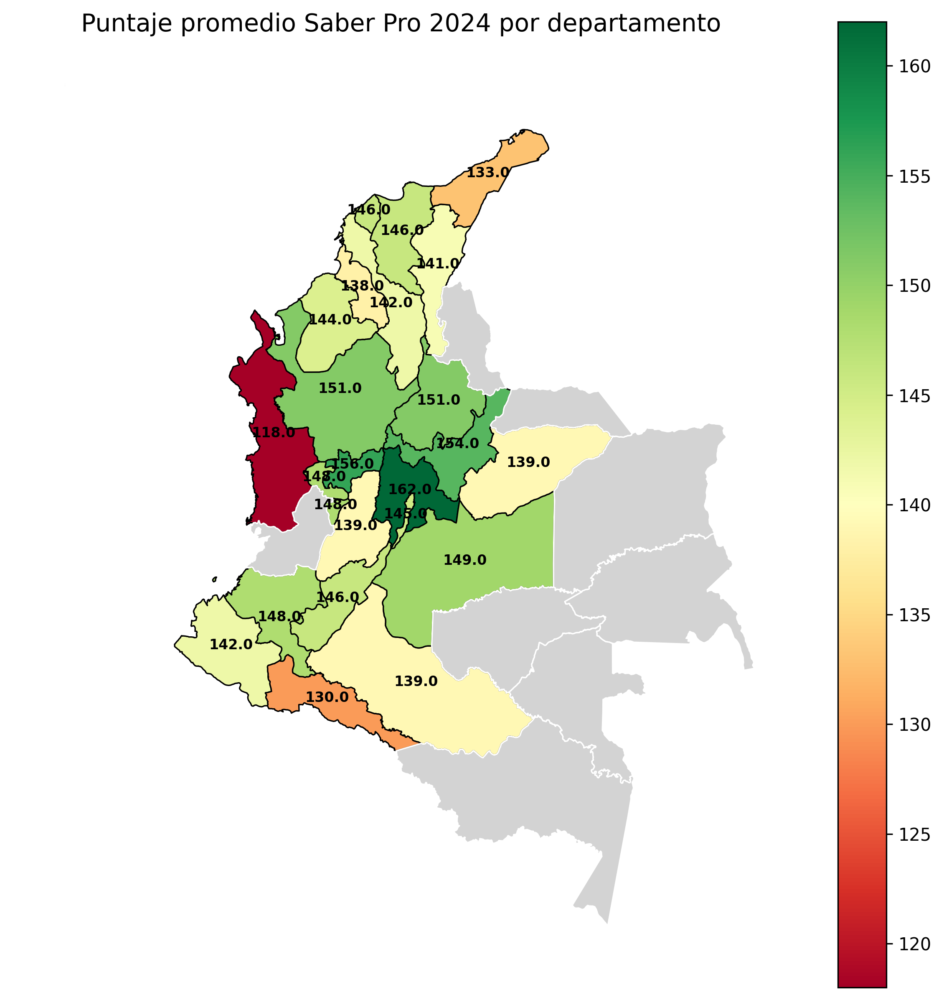

Análisis de Resultados
Uno de los principales dilemas en la interpretación de los resultados es que, con frecuencia, muchos se limitan al análisis inicial proporcionado por el ICFES (PDF). Sin embargo, este enfoque no siempre considera otros factores relevantes, como los promedios a nivel departamental o municipal, la modalidad de estudio, entre otros aspectos. Esta omisión restringe la comparación con el promedio nacional y dificulta comprender el verdadero impacto de la institución de educación superior (IES) en su región. Además, la forma en que se visualizan los informes influye significativamente en la comprensión de los resultados y su contexto.
Por ejemplo, en el año 2024, el promedio de la prueba Saber Pro no fue uniforme entre las diferentes regiones del país. Departamentos como Cundinamarca, presentaron diferencias notables en comparación con Chocó o La Guajira. Este tipo de ejercicios transforma la manera en que se analiza la información, especialmente cuando se desagrega por competencias o se examinan afirmaciones específicas a nivel regional. Acontinuación podemos visualizar la diferencia entre los promedios a nivel departamental.

Si deseas conocer más sobre este tipo de análisis, puedes contactarme a través de mi perfil en LinkedIn.